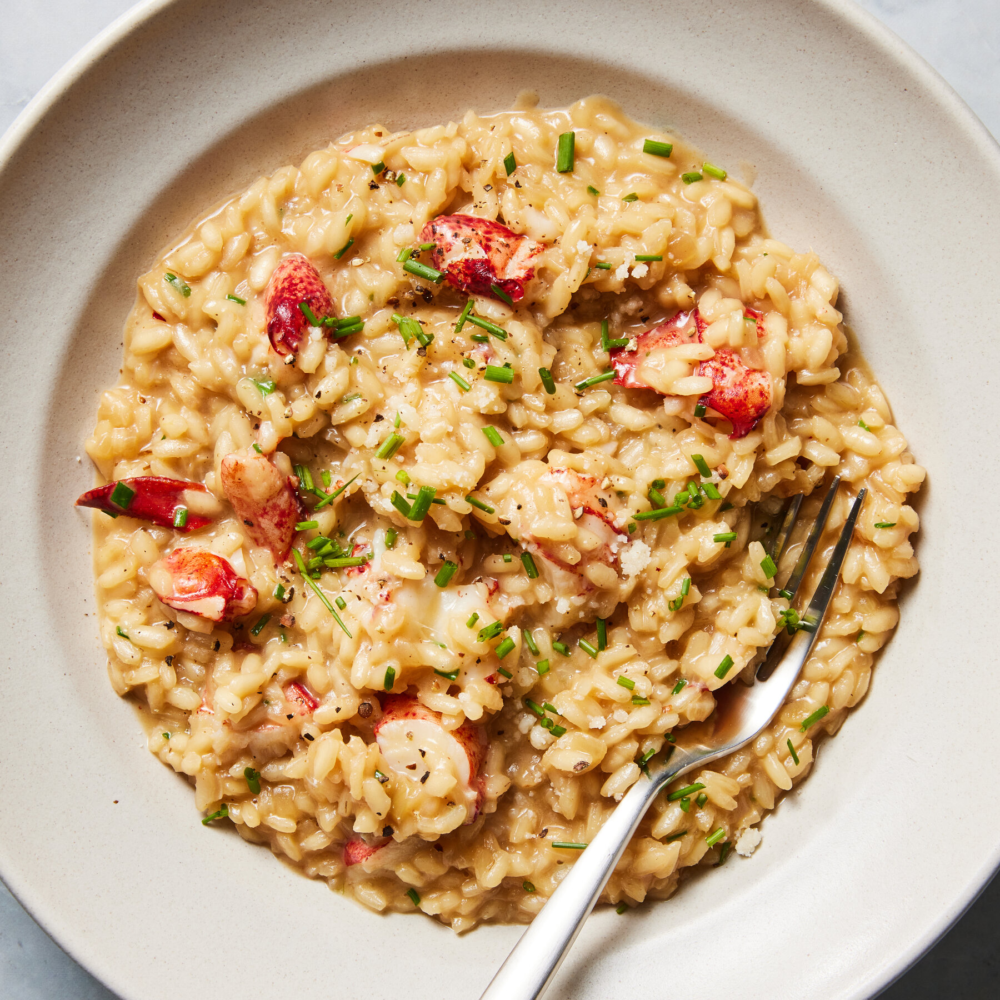

Risotto
Ingredients
- 1 cup Arborio rice
- 4 cups chicken or vegetable broth
- 1 small onion, finely chopped
- 2 cloves garlic, minced
- 1/2 cup white wine (optional)
- 1/2 cup grated Parmesan cheese
- 2 tablespoons olive oil
- Salt and pepper to taste
- Fresh parsley for garnish (optional)